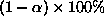
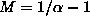
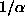
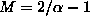

Before we go into detail about the generation of surrogate samples, let us outline how an actual test can be carried out. Many examples are known of nonlinearity measures that aren't even approximately normally distributed. It has therefore been advocated since the early days [6] to use robust statistics rather than parametric methods for the actual statistical test. In other words, we discourage the common practice to represent the distribution of the nonlinearity measure by an error bar and deriving the significance from the number of ``sigmas'' the data lies outside these bounds. Such a reasoning implicitly assumes a Gaussian distribution.
Instead, we follow Theiler et al. [6] by using a rank-order test. First, we select a residual probability of a false rejection, corresponding to a level of significance . Then, for a one-sided test (e.g. looking for small prediction errors only), we generate  surrogate sequences. Thus, including the data itself, we have  sets. Therefore, the probability that the data by coincidence has the smallest, say, prediction error is exactly , as desired. For a two-sided test (e.g. for time asymmetry which can go both ways), we would generate  surrogates, resulting in a probability that the data gives either the smallest or the largest value.
For a minimal significance requirement of 95% , we thus need at least 19 or 39 surrogate time series for one- and two-sided tests, respectively. The conditions for rank based tests with more samples can be easily worked out. Using more surrogates can increase the discrimination power.